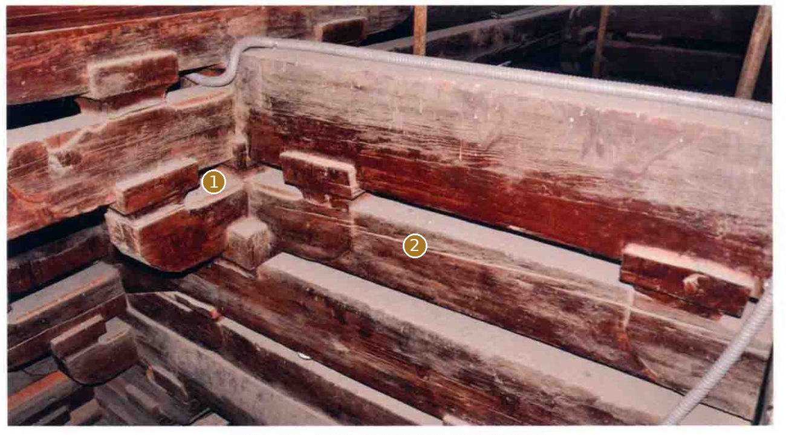
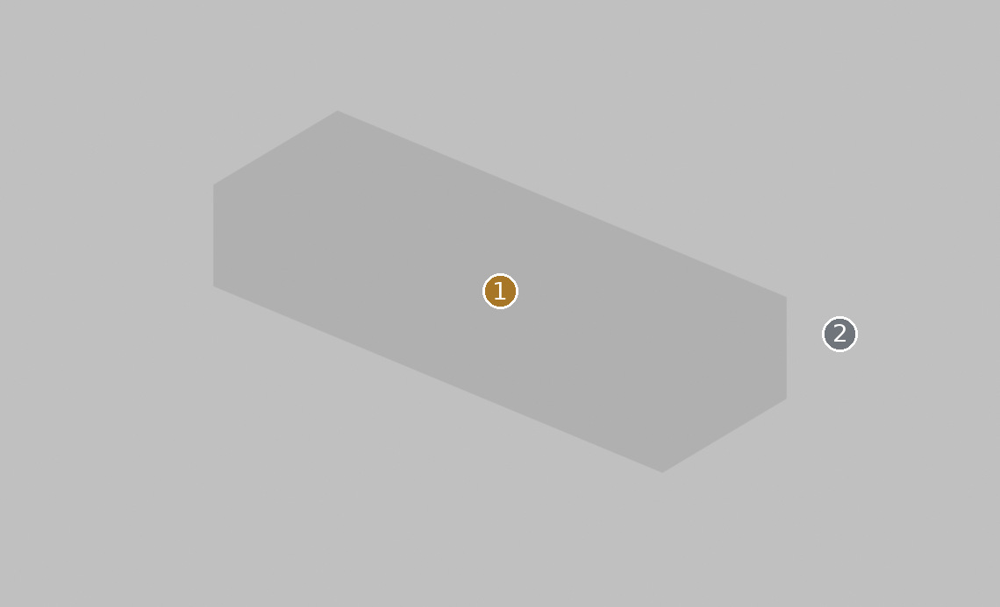
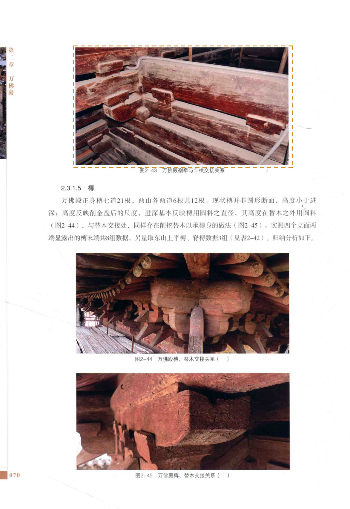

丁栿Master只有等截面参考体
先看形，再看差异


本页框选节点，未声称分离出完整丁栿
定性对照：两侧未做比例归一或像素叠加。橙色虚框只表示原图查找范围。
02 / 形态细节
其他角度、截面与现有局部版本


03 / 原图与位置
目标在原始资料的哪里


安装位置与复用
东山南侧 / 上丁栿；东山北侧 / 上丁栿；东山南侧 / 下丁栿；东山北侧 / 下丁栿；西山南侧 / 上丁栿；西山北侧 / 上丁栿；西山南侧 / 下丁栿；西山北侧 / 下丁栿
变体：沿用现行登记口径
Master：CMP-FRAME-DINGFU-001_MASTER
对应实例范围（8条登记记录，不是物理件数）
- 丁栿-东山-上丁栿-南 · 东山南侧 / 上丁栿
- 丁栿-东山-上丁栿-北 · 东山北侧 / 上丁栿
- 丁栿-东山-下丁栿-南 · 东山南侧 / 下丁栿
- 丁栿-东山-下丁栿-北 · 东山北侧 / 下丁栿
- 丁栿-西山-上丁栿-南 · 西山南侧 / 上丁栿
- 丁栿-西山-上丁栿-北 · 西山北侧 / 上丁栿
- 丁栿-西山-下丁栿-南 · 西山南侧 / 下丁栿
- 丁栿-西山-下丁栿-北 · 西山北侧 / 下丁栿
04 / 证据与边界
出处、模型身份与未知部分
仍然未知：丁栿与剳牵在照片中的单件边界未全部闭合；识别依赖报告图名和层位。
原工程记录（按原文保留）：实测族截面不等于逐根尺寸；端部骑搭与隐刻未在等截面参考体中完整表达。
资料出处
A1 · PDF第85页 / 印刷第70页 · 归档原图 A1-p085.jpg
A1 · PDF第83页 / 印刷第68页 · 归档原图 A1-p083.jpg


A1、A2、A3共享测绘数据脉络，不作为三次独立复测。官方展示只作形态参考；推断、遮挡与未知不升级为实测事实。